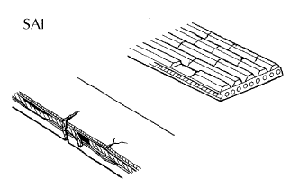
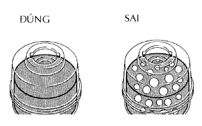
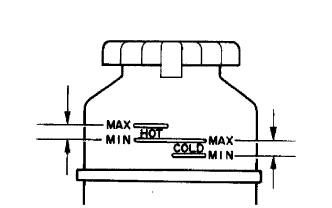
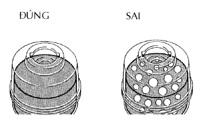
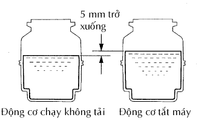
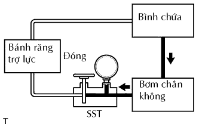
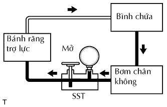
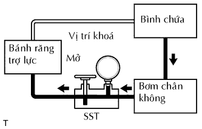
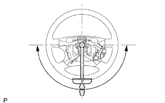

HỆ THỐNG TRỢ LỰC LÁI > KIỂM TRA TRÊN XE |
| 1. KIỂM TRA ĐAI DẪN ĐỘNG |
|  |
Kiểm tra bằng quan sát xem dây đai có quá mòn, sờn … Nếu tìm thấy hư hỏng, hãy thay dây đai.
| 2. HÃY XẢ KHÍ RA KHỎI HỆ THỐNG TRỢ LỰC LÁI |
Kiểm tra mức dầu.
Kích phía trước của xe lên và đỡ xe bằng các giá đỡ.
Quay vô lăng.
Với động cơ tắt máy, quay chậm vô lăng từ vị trí khoá sang vị trí khoá vài lần.
Hạ xe xuống.
Khởi động động cơ. Để động cơ chạy ở tốc độ không tải trong vài phút.
Quay vô lăng.
Với động cơ chạy không tải, quay vô lăng sang trái hoặc sang phải đến vị trí khoá hoàn toàn và giữ tại đó khoảng 2 đến 3 giây. Sau đó quay vô lăng đến vị trí khoá hoà toàn phía đối diện và giữ tại đó từ 2 đến 3 giây.
Lặp lại bước trên một vài lần.
Tắt động cơ.
|  |
Kiểm tra hiện tượng nổi bọt và đóng cặn, Nếu hệ thống đã được xả khí hai lần do có hiện tượng nổi bọt và đóng cặn, thì kiểm tra rò rỉ dầu trong hệ thống.
Kiểm tra mức dầu.
| 3. KIỂM TRA MỨC DẦU |
|  |
Giữ xe được thăng bằng.
Với động cơ tắt máy, kiểm tra mức dầu trợ lực trong bình chứa dầu. Nếu cần, hãy đổ thêm dầu trợ lực vào.
Khởi động động cơ và để nó chạy không tải.
Quay vô lăng sang vị trí khoá hoàn toàn bên trái hoặc bên phải. Sau đó quay vô lăng đến vị trí khoá hoàn toàn phía đối diện. Hãy lặp lại quy trình này vài lần để làm tăng nhiệt độ dầu.
|  |
Kiểm tra hiện tượng nổi bọt và đóng cặn, Nếu có hiện tượng nổi bọt và đóng cặn, thì phải xả khí ra khỏi hệ thống trợ lực lái.
|  |
Với động cơ chạy không tải, đo mức dầu trợ lực trong bình chứa.
Tắt động cơ.
Đợi vài phút và đo lại mức dầu trong bình chứa.
Kiểm tra mức dầu.
| 4. KIỂM TRA ÁP SUẤT DẦU TRỢ LỰC LÁI |
Ngắt ống cấp áp. (Xem trang Kích chuột vào đây).
Lắp SST vào như trên hình vẽ.
Hãy xả khí ra khỏi hệ thống trợ lực lái.
Khởi động động cơ và để nó chạy không tải.
Quay vô lăng sang vị trí khoá hoàn toàn bên trái hoặc bên phải. Sau đó quay vô lăng đến vị trí khoá hoàn toàn phía đối diện. Hãy lặp lại quy trình này vài lần để làm tăng nhiệt độ dầu.
|  |
Với động cơ chạy không tải, đóng van của SST và quan sát chỉ số trên SST.
|  |
Với động cơ chạy không tải, mở van hoàn toàn.
Đo áp suất dầu tại tốc độ đông cơ 1,000 vòng/phút và 3,000 vòng phút.
|  |
Khi động cơ đang chạy không tải và van mở hoàn toàn, quay vô lăng sang vị trí khoá hoàn toàn.
Tháo SST.
Lắp cụm ống cấp áp (Xem trang Kích chuột vào đây).
Hãy xả khí ra khỏi hệ thống trợ lực lái.
| 5. KIỂM TRA LỰC CẢN LÁI |
|  |
Định tâm vô lăng.
Tháo mặt vô lăng (Xem trang Kích chuột vào đây).
Khởi động động cơ và để nó chạy không tải.
Đo lực đánh lái cả hai hướng.
Xiết chặt đai ốc bắt vô lăng.
Lắp mặt vô lăng (Xem trang Kích chuột vào đây).